Before the descent, the crew checks that the aircraft can land on the planned runway: the landing distance for the runway condition and braking, the margin left, the approach speed VAPP and the go-around performance. On the real A380 this is the LDG PERF application of the OIS (FCOM PER-LND); on the A320 it is the QRH (in flight) and the FCOM tables (dispatch). This page does both, with the data of each aircraft.
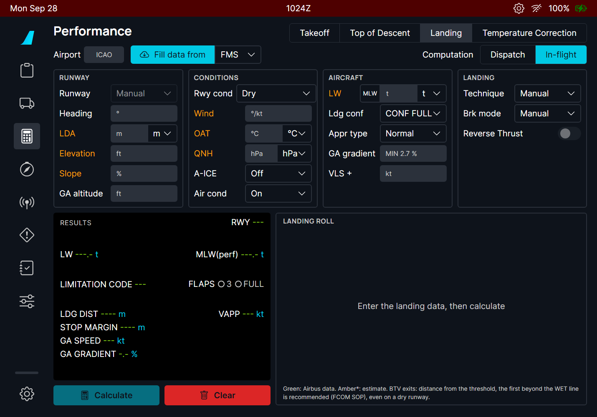
| Part | Contents |
|---|---|
| Airport, Fill data from | The ICAO code; Fill data from imports the data from the FMS (A380 FMC / A320 MCDU), the OFP (SimBrief) or the METAR. |
| Computation | DISPATCH or IN-FLIGHT. |
| RUNWAY | Runway from the list (or Manual), heading, landing distance available (LDA), elevation, slope, and on the A380 the go-around altitude. |
| CONDITIONS | Runway condition, wind (direction/speed), OAT, QNH; on the A380 the anti-ice and air conditioning (they change the go-around gradient). |
| AIRCRAFT | Landing weight (MLW button = the maximum landing weight), landing configuration, and on the A380 the approach type, the required go-around gradient and the VLS increment. |
| LANDING | Manual landing or autoland, braking mode, reverse thrust, and on the A320 the overweight procedure. |
| RESULTS | The results in the OIS layout (below). |
| LANDING ROLL | A picture of the runway with the touchdown, the stop point of each braking mode, the stop margin, and on the A380 the BTV lines and the runway exits. |
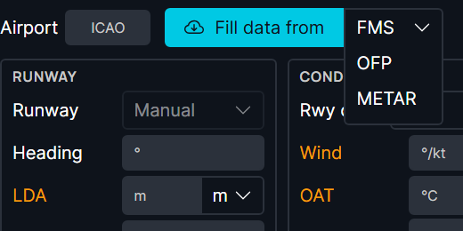
| Line | Meaning |
|---|---|
| LW | The landing weight used. |
| MLW(perf) | The highest landing weight the runway and the go-around allow: the lower of the weight whose landing distance just fits the LDA and the weight that still gives the required go-around gradient. It is a performance limit, not the structural maximum landing weight (395 t on the A380): it can be above it. Above the structural MLW the page shows OVERWEIGHT LANDING. |
| LIMITATION CODE | WGT: your weight is below MLW(perf), nothing limits you. LDA (red): the landing distance limits the weight. ACG: the go-around gradient limits it. |
| FLAPS | The landing configuration used (with AUTO CONF: the one the page chose). |
| LDG DIST / REG LDG DIST | In flight: the actual landing distance for the braking mode. Dispatch: the required (regulatory) distance. |
| STOP MARGIN | LDA minus the landing distance. Negative (red): the aircraft does not stop on the runway. |
| GA SPEED, GA GRADIENT | The go-around speed and the climb gradient of the go-around configuration. |
| VAPP | VLS of the landing configuration + the VLS increment (the wind increment, or what you enter). |
| Bottom line | The actual landing distance (ALD), the wind taken into account, the go-around configuration, and whether reverse thrust was credited. |
Colours follow the flyPad takeoff calculator: green values come from Airbus data; values in amber with a star (*) are estimates of a model fitted on that data (see Limitations).
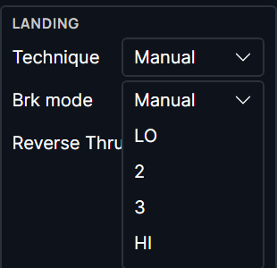
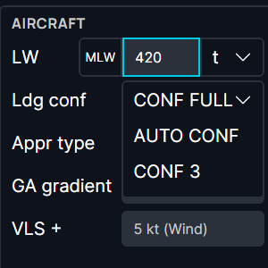
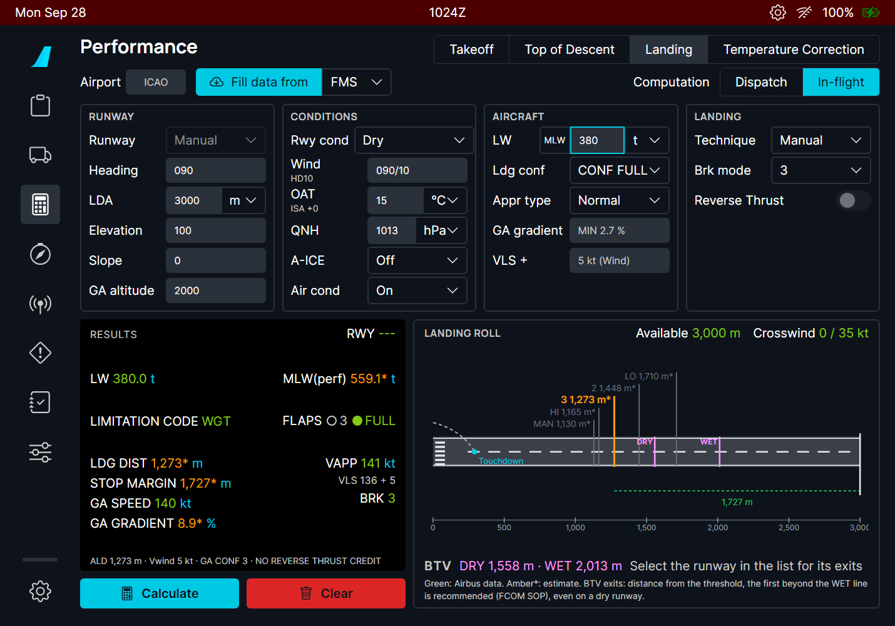
AUTO CONF (A380, FCOM PER-LND): CONF FULL when its go-around in CONF 3 gives the required gradient, otherwise CONF 3 with a go-around in CONF 2; for an overweight landing, CONF 3 with a go-around in CONF 1+F.
The runway condition follows the runway condition codes (RWYCC): dry, wet, water and slush 1/4" or 1/2", compacted snow, ice. The crosswind limit of the condition is shown at the top of the landing roll.
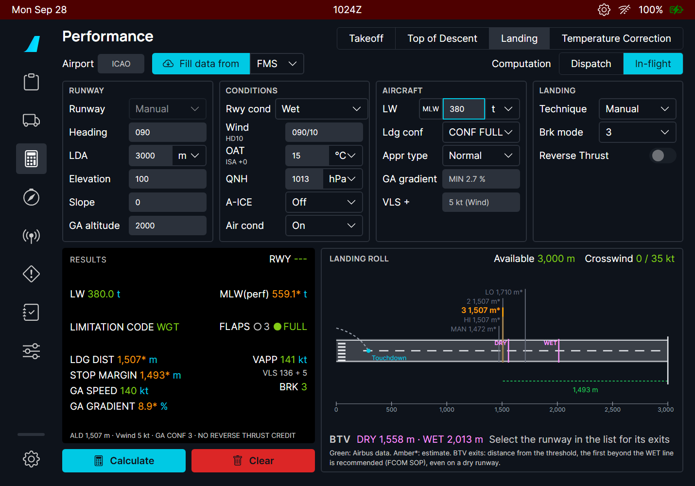
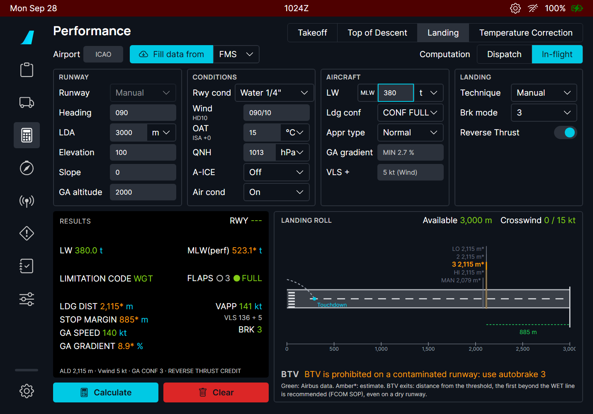
On the A380, the page shows the BTV DRY and WET lines: where the aircraft stops with the BTV decelerations (FCOM DSC-32-10-30-20), from 400 m after the threshold plus 5 s of roll. When the runway comes from the list and a Navigraph account is linked, the runway exits of the airport map are drawn and rated:
| Exit | Meaning |
|---|---|
| Recommended | The first exit beyond the WET line (the FCOM SOP choice, even on a dry runway). |
| Beyond WET | Achievable wet or dry. |
| Dry only | Between the DRY and WET lines: only on a dry runway. |
| Not achievable | Before the DRY line. |
Without the runway list or the Navigraph data, the line says "Select the runway in the list for its exits". This is information for your briefing: the BTV selection itself is made on the OANS, as on the real aircraft.
DISPATCH gives the required landing distance used to check a runway before departure: the actual distance divided by 0.6 on a dry runway, ×1.15 on a wet one, and on a contaminated runway the higher of the wet value and ALD ×1.15 (A380 FCOM PER-LND). Braking is manual (the braking mode is greyed out). The orange bar is the required distance.
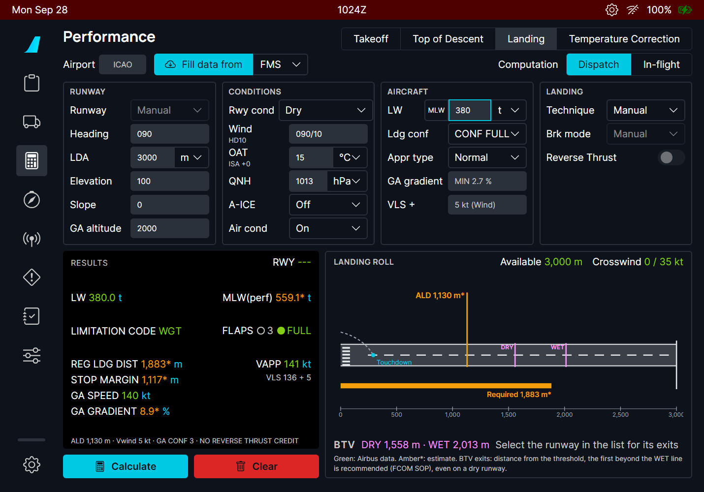
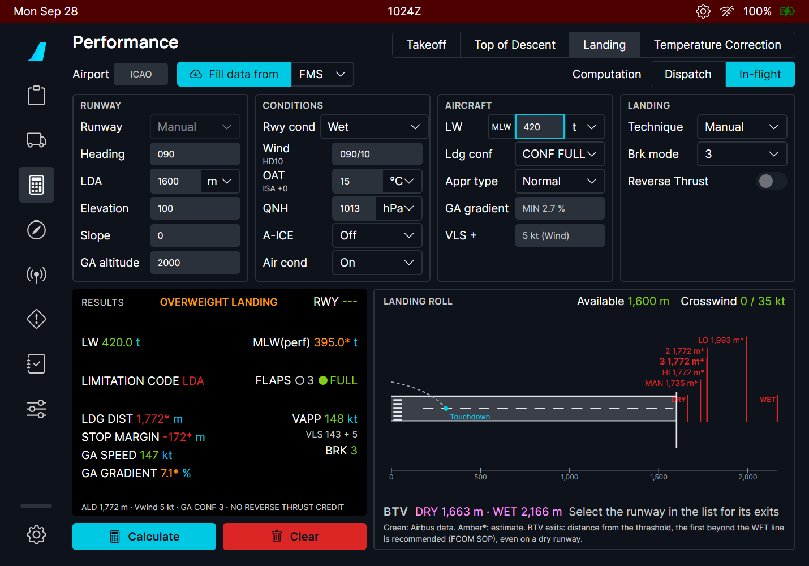
The A320 uses the same screen with its own data: the QRH in-flight landing distances (shown ×1.15, the QRH margin) and the FCOM dispatch tables (PER-LDG-DIS-RLD) with the autoland correction and the wet minimum. Braking modes are Manual, LO and MED; the Overweight Procedure switch applies the QRH overweight landing corrections. There is no go-around section.
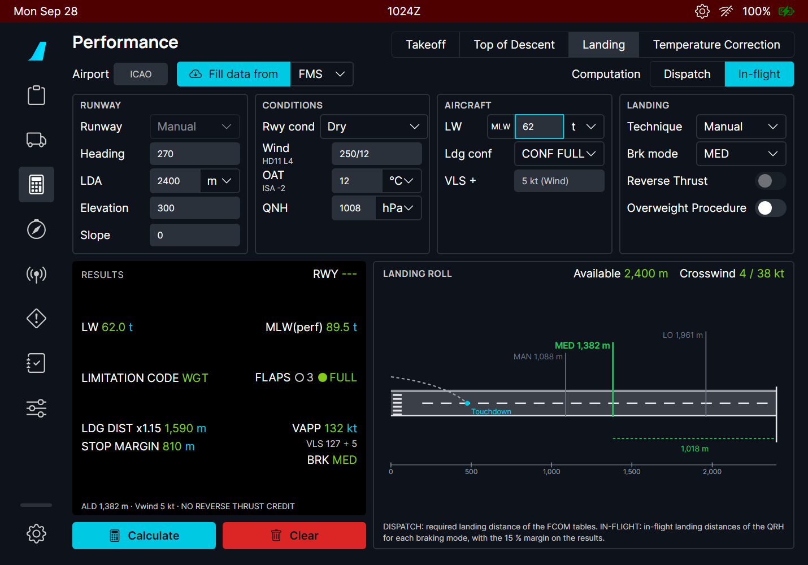
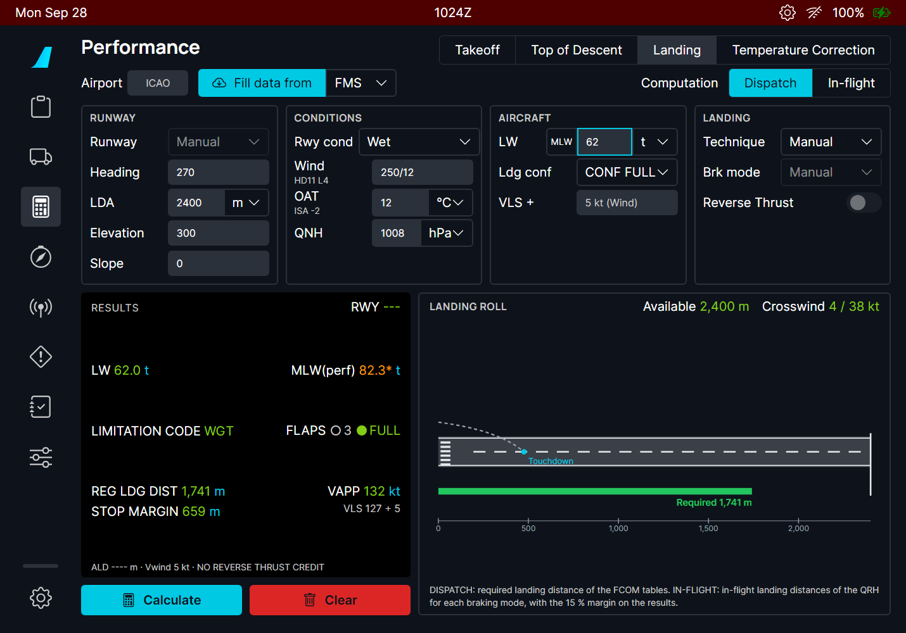
| Situation | What you should see |
|---|---|
| Inputs missing | Amber labels; the Calculate button stays dim until they are filled. |
| Fill data from FMS without a flight plan | Only what the FMS has is filled; complete the rest by hand. |
| Dry or wet runway, reverse thrust on | NO REVERSE THRUST CREDIT: the FCOM gives none there. |
| Contaminated runway | Longer distances, lower crosswind limit; A380: BTV prohibited. |
| Landing weight above the MLW | OVERWEIGHT LANDING in the RESULTS; A380 AUTO CONF lands in CONF 3. |
| LW above MLW(perf) | Limitation code LDA or ACG in red; the stop margin may be negative. |
| Change of an input after Calculate | Press Calculate again. |
| Limitation | Why | What to do |
|---|---|---|
| Most A380 values are estimates (amber *). | The only public A380 landing data is the landing field length chart of the Airbus A380 Aircraft Characteristics (dry, manual, CONF FULL). The other cases use a model fitted on it (0.8 % error on the chart) and the FCOM rules. | Use the results for training and planning, not as certified data. |
| Autobrake and BTV distances are estimates. | They come from the autobrake decelerations of the FCOM, not from Airbus tables. | - |
| BTV exits need the runway from the list and a Navigraph account. | The exits come from the Navigraph airport map (the OANS data). | Choose the runway in the list; link Navigraph. |
| No BTV on the A320. | The A320 has no BTV. | - |
| The go-around gradient is calibrated on one FCOM example. | No A380 go-around tables are public. | - |